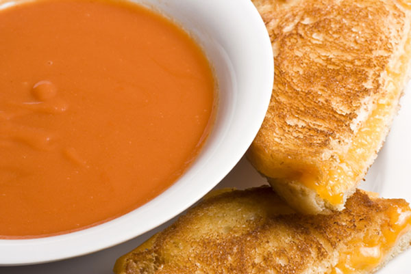

Homemade Tomato Soup and Grilled Cheese

Description
A hearty and heartwarming classic.
Make this recipe really shine by using fresh bread and whole tomatoes.
Ingredients
- Four slices freshly sliced bread
- One can whole peeled tomatoes
- One large white onion
- 1/2 C Freshly grated cheddar cheese
- 1/2 C Freshly grated Parmiggiano Reggiano
- 2 Tbsp Unsalted butter
- 1 Tbsp Flour
- Pinch of red pepper flakes
- Salt and pepper
- Olive Oil
Steps
- Prepare your ingredients. Dice the white onion and set aside. Grate your two cheeses, mix, and set aside.
- Melt the butter in a stock pot over medium heat.
- Cook the onions in the butter until lightly browned. When onions are almost done, add red pepper flakes.
- Add flour and stir to coat onions.
- Add whole tomatoes and their juice. Raise heat and bring to a boil, then reduce and let simmer for 15 minutes. Break apart tomatos with wooden spoon while soup is cooking.
- While soup is cooking, put a medium pan over medium heat and melt second Tbsp of butter.
- When butter is melted, place bread in pan until lightly browned. Remove from pan.
- Put mixed cheese on browned sides of bread, put pieces together to form a sandwich, and return to the pan.
- Cook grilled cheese until browned on both sides and cheese is melted. Add additional butter if needed.
- After tomato soup is done cooking, blend with an immersion blender until uniform consistency, or transfer to a stand mixer. After blending, add salt and pepper to taste.
- Serve soup immediately with drizzle of olive oil and grilled cheese sandwiches.